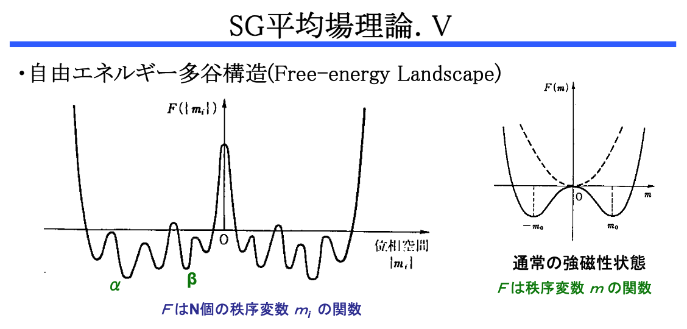

A Blog Entry on Bayesian Computation by an Applied Mathematician
$$ %%% 汎用コード列%%% 演算子
%%% 線型代数学%%% 複素解析学 %%% 集合と位相
%%% 形式言語理論 %%% Graph Theory
%%% 多様体 %%% 代数 %%% 代数的位相幾何学 %%% 微分幾何学 %%% 函数解析 %%% 積分論%%% Fourier解析 %%% 数値解析
%%% 確率論%%% 情報理論 %%% 量子論 %%% 最適化 %%% 数理ファイナンス
%%% 偏微分方程式 %%% 常微分方程式 %%% 統計力学 %%% 解析力学
%%% 統計的因果推論 %%% 応用統計学 %%% 数理統計%%% 計量経済学
%%% 無限次元統計模型の理論%%% Banach Lattices
%%% 圏 %代数の圏 %Metric space & Contraction maps %確率空間とMarkov核の圏 %Sober space & continuous map %Category of open subsets %Category of sheave %Category of presheave, PSh(C)=[C^op,set]のこと %Convergence spaceの圏 %一様空間と一様連続写像の圏 %フレームとフレームの射 %その反対圏 %滑らかな多様体の圏 %Quiverの圏
%%% SMC %%% 括弧類%%% 予約語
%%% 略記
%%% 矢印類 $$
普通数学者がやらないことであるが，古典粒子系を例にとって，統計力学における基本的な用語を確認する．
統計力学といえども場面設定は力学であり，その形式はハミルトン形式が利用される．
しかし，その運動方程式を解析的に分析するのではなく，相空間 \(\Omega\) 上の（有界）測度に注目して，確率統計学，果てには計算統計学を利用して展開していく．
ちょうど，統計学ではここのサンプル \(\omega\in\Omega\) よりも全体的な振る舞い \(P\in\mathcal{P}(\Omega)\) や統計量 \(\Omega\to\mathbb{R}\) の平均値や分散などの統計的な振る舞いに興味があるのと同じことである．
1 古典粒子系
1.1 多様体 \(\Omega_{\Lambda,N}\)
有界集合 \(\Lambda\subset\mathbb{R}^3\) に囚われた古典的な \(N\) 粒子系を考えると，位置と速度によって各粒子は記述できるから， \[ \Omega_{\Lambda,N}:=(\Lambda\times\mathbb{R}^3)^N \] 内の点によって系が記述できる．これを 相空間 (phase space) という．1
1.2 関数 \(H_{\Lambda,N}\)
この上に エネルギー が定まるが，これは ハミルトニアン ともいう：2 \[ \begin{align*} H_{\Lambda,N}(Q,V)&=\sum_{i=1}^N\frac{mv_i^2}{2}+\sum_{i<j\in[N]}U(q_i-q_j)\\ &\qquad\qquad+\sum_{i=1}^NV_b(q_i) \end{align*} \] \[ Q=(q_1,\cdots,q_N)\in\Lambda^{3N} \]
多くの場合，ポテンシャル関数 \(U\) はコンパクト台を持つ，すなわち，相互作用半径 (radius of interaction) \(R\) をもつとする：\(\mathrm{supp}\;U\subset U_R(0)\)．3
経験則的に，まずは Lennard-Jones ポテンシャル \[ U(r)=\frac{A}{r^{12}}-\frac{B}{r^6}\quad A,B>0 \] を用いてモデリングする場合が多い．
系の時間発展は変換の族 \(\{S_t\}\subset\mathrm{Aut}(\Omega_{\Lambda,N})\) （動力学 dynamics という）によって記述され， 動力学は運動方程式から導出される． \[ \frac{d q_i}{d t}=v_i \] \[ m\frac{d v_i}{d t}=-\sum_{i\ne j}\nabla U(q_j-q_i)-\nabla V_b(q_i) \]
1.3 部分多様体 \(\Omega_{\Lambda,N,E}\) と小正準分布
この動力学 \(\{S_t\}\) は体積とエネルギーを保存量にもつ．すなわち，各 \(S_t\) は保測的で，等エネルギー集合 \[ \Omega_{\Lambda,N,E}:=\left\{(Q,\Lambda)\in\Omega_{\Lambda,N}\mid H_{\Lambda,N}(Q,\Lambda)=E\right\} \] を不変部分集合にもつ．
\(\Omega_{\Lambda,N,E}\) 上の測度 \[ \nu_{\Lambda,N,E}(B):=\lim_{\Delta E\to0}\frac{\ell(\Delta B)}{\Delta E} \] は \(S_t\) によって保存される．4 これを 小正準分布 (microcanonical measures) または Gelfand-Leray measures という．
ただし，\(\Delta B\) は \(x\in B\) から始まった \(\Omega_{\Lambda,N,E}\) の法線（面）で，\(\Omega_{\Lambda,N,E+\Delta E}\) との交点で終わる線分の \(x\in B\) に関する合併である．
他にも，等位集合が \(S_t\) によって保存される関数 \(I_i:\Omega_{\Lambda,N}\to\mathbb{R}\) は存在し得て，その場合は全ての合併 \(\Omega_{\Lambda,N,E,I_1,\cdots,I_k}\) 上に小正準分布が遺伝する．
1.4 エルゴード仮説
Boltzman のエルゴード仮説は，他の積分 \(I_i\) が存在しない場合，\(\Omega_{\Lambda,N,E}\) 上の \(S_t\)-不変で \(\nu_{\Lambda,N,E}\)-絶対連続な測度は，\(\nu_{\Lambda,N,E}\) の定数倍に限る，というものである．
これにより，特定の系が運動 \(S_t\) によって平衡状態に至った際，相空間上を旅する際に特定の状態が現れる頻度分布は，必ず小正準分布に一致することが帰結される．
1.5 configuration gas
もし粒子が全て動いていないならば，相空間は \(\mathbb{R}^{3N}=:\Omega_{\Lambda,N}^{\text{conf}}\) で良い．
これを configuration gas といい，古典粒子系の更なる理想化に当たる．
2 格子模型
一部は実際の物理系の良いモデルとなっているが，より複雑なモデルの統計物理学的性質の良い第一近似としても用いられる．
加えて，このような離散的なグラフとしての表現を通じて，機械学習や情報科学との関わりを持つ．そのような分野は情報統計力学と呼ばれる (西森秀稔, 2003)．5
2.1 格子気体
configuration gas から更なるモデルの簡略化を考える．
粒子の位置は必ず格子点上にあるとすれば，配置空間はさらに \(\Lambda\subset\mathbb{Z}^3\) に対して \[ \begin{align*} &\Omega_{\Lambda,N}=\\ &\left\{Q=(q_1,\cdots,q_N)\in\Lambda^N\mid q_i\ne q_j\;(i\ne j)\right\} \end{align*} \] と簡略化される．
仮に外場もないとすると，ハミルトニアンは単にポテンシャルの和 \[ H(Q)=\sum_{i<j}U(q_i-q_j) \] となる．
2.2 スピン系
有限集合 \(\Lambda\subset\mathbb{Z}^3\) が粒子で満ちているとすると，配置空間は縮退する．
その際のスピン系の相空間は，関数の集合 \[ \Omega_\Lambda:=S^\Lambda \] になる．
\(S=\partial U_1(0)\subset\mathbb{R}^3\) の場合を 平面回転子 (planar rotator) モデルという．6 \(S=\{\pm1\}\) としても（Ising spin），7 物理系のモデルとして磁性体の第一近似として使える模型になる．
ハミルトニアンは，相互作用と外場の和として \[ H_\Lambda(\sigma)=\sum_{x\ne y\in\Lambda}U(x-y)\sigma(x)\sigma(y)+h\sum_{x\in\Lambda}\sigma(x) \] と与えられる．
2.2.1 Ising 模型
関数 \(U\) が \(U_1(0)\cap\mathbb{Z}^3\) を台に持つ場合を（狭義の） Ising 模型 といい，\(U\) は \(J\) でも表す：8 \[ H_\Lambda(\sigma)=-J_{x,y}\sum_{\lvert x-y\rvert=1}\sigma(x)\sigma(y)-h\sum_{x\in\Lambda}\sigma(x) \]
\(J_{x,y}>0\) である場合，低温秩序相は強磁性体のモデルになっている．\(J_{x,y}\equiv J\) という定値性の仮定もよく置かれる．
2.2.2 Curie-Weiss 模型
この最近傍 Ising 模型に，Weiss 近似という平均場近似を施し，Curie-Weiss Hamiltonian \[ H_{\Lambda}(\sigma)=-\frac{dJ}{\lvert\Gamma\rvert}\sum_{x\ne y\in\Lambda}\sigma(x)\sigma(y)-h\sum_{x\in\Lambda}\sigma(x) \] を用いる模型を Curie-Weiss 模型 という．
相互作用がもはや最近傍同士ではなくなっている．これを 無限レンジ模型 ともいう (西森秀稔, 2003, p. 24)．
この式からは，各スピンが，具体的な他のスピンと相互作用するというより，全ての他スピンからなる平均場（有効磁場）と相互作用していると読める．9
このような平均場近似を施していても，低温の強磁性相と高温の常磁性相が別れることが観察される (Friedli & Velenik, 2017, p. 62)．
2.3 スピングラス
\(J_{x,y}\) の符号がバラバラである場合，これをスピングラスの模型という．10
このような模型では，低温秩序相が消えて，スピンがバラバラである状態（スピングラス相）も安定たり得ることがわかっている．
特に，安定な状態が複数存在し，温度を少し変えるだけで全く性質の異なる別の状態へ系が移ることもよくある．自由エネルギーが強い多峰性を示すのである．

CuMn などはスピン間の相互作用が，RKKY (Ruderman-Kittel-Kazuya-Yoshida) 相互作用 \[ J\,\propto\,\frac{\cos(2k_Fr_{12})}{r_{12}^3} \] により表され，これは符号が分子の \(\cos\) により正にも負にもなり得る．
AuFe もスピングラスである (Cannella & Mydosh, 1972)．11
2.3.1 Edwards-Anderson 模型 (Edwards & Anderson, 1975)
\((J_{x,y})_{\lvert x-y\rvert=1}\) を，グラフのエッジの集合上に定義された独立な Gauss 確率場とし，外場を考えないものを，Edwards-Anderson 模型 という： \[ H(\sigma)=-\sum_{\lvert x-y\rvert=1}J_{x,y}\sigma(x)\sigma(y). \]
確率変数 \(J_{x,y}\sim\mathrm{N}_1(0,N)\) の平均（配位平均）と，アンサンブル平均という２つの平均を扱う必要がある点で極めて難しい模型となっている．
この模型において自由エネルギーを計算するために，分配関数の対数の平均を，分配関数の積率によって計算する \[ \operatorname{E}[\log Z]=\lim_{n\to\infty}\frac{\operatorname{E}[Z^n]-1}{n} \] という関係式を用いた．これを レプリカ法 という．ただし，期待値は \(J_{x,y}\) に関するもので，アンサンブル平均 \(\langle-\rangle\) とは関係ないことに注意．
現状，特に Talagrand はレプリカ法の数学的妥当性について極めて懐疑的であるが，多くは数値実験により検証されており，何らかの本質を捉えていることは間違いない．12
2.3.2 Sherrington-Kirkpatrick 模型 (Sherrington & Kirkpatrick, 1975)
EA 模型を無限レンジにすることで，平均場近似が厳密解を与えるようにし，熱力学極限 \[ \lim_{N\to\infty}\frac{\operatorname{E}[\log Z_N]}{N} \] を与えることでこれを解いたものである．その際にもレプリカ法が用いられた．
著者のうちの Scott Kirkpatrick は 擬似アニーリング (Kirkpartick et al., 1983) の開発者でもある．
しかしこの解（レプリカ対称な解）は初め低温域では破綻を起こすとされていた．(Parisi, 1980) がこの問題を解決し，任意の温度 \(T>0\) での厳密解（レプリカ対称性破れ解）が得られた．これは Parisi ansatz と呼ばれる．13 この解は計算機シミュレーションと高い精度で一致し，常磁性相と強磁性相に加えて，スピングラス相を示す．
Parisi はこの業績で 2021 年にノーベル物理学賞を受賞した．その３番目に多く引用されている論文 (Marinari & Parisi, 1992) は 擬似テンパリング の提案論文である．
2.3.3 Thouless-Anderson-Plamer 方程式 (Thouless et al., 1977) と近似メッセージ伝播 (Bolthausen, 2014)
一方で，SK 模型に対して高温摂動展開により自由エネルギーを与えるアプローチもある．
特に，熱力学極限に向かって漸近的に成り立つ次の方程式を TAP 方程式という： \[ \langle\sigma_i\rangle\approx\tanh\left(\frac{\beta}{\sqrt{N}}\sum_{j\ne i}J_{ij}\langle\sigma_j\rangle+h-\beta^2(1-q)\langle\sigma_i\rangle\right) \]
これの数学からの証明も近年試みられている (Talagrand, 2003), (Chatterjee, 2010)．しかし，厳密な証明は高温に限られ，低温域では解の一意性が失われるのが困難を窺わせる．２つの層の分離面としては Almeida-Thouless 線が提案されている．
しかし (Bolthausen, 2014) は 近似メッセージパッシング に基づいて，この TAP 方程式の解を与えるアルゴリズムを提案した．このアルゴリズムは，高次元統計学において \(M\)-推定量を計算するのにも応用されている (Donoho & Montanari, 2016)．高次元漸近論は計算科学の進歩とともにあるのである．
2.3.4 Hopfield 模型 (Hopfield, 1982)
のちにスピングラスの理論は 連想記憶 にも応用され，広く情報処理の問題を統計力学の技法によって研究する情報統計力学という新たな分野が開拓された．
連想記憶のニューラルネットワーク は無限レンジ，すなわち全結合のニューラルネットワークで，素子 \(\{S_i\}_{i=1}^N\subset\mathrm{Map}(T;\{\pm1\})\) からなるとき， \[ S_i(t+\Delta t)=\mathop{\mathrm{sgn}}\left(\sum_{j\ne i}J_{ij}\frac{S_j(t)+1}{2}-\theta_i\right) \] という規則で運動する．\(J_{ij},\theta_i\) がモデルパラメータである．
\(J_{ij}\) をうまく「学習」できた際には，一部の初期値について，この運動の収束先として画像が「連想」出来る．記憶しておけるのである．14
実は，\(p\) 個のパターン \((\xi^\mu_i)_{i=1}^N\in\Omega\;(\mu=1,\cdots,p)\) を記憶させるには， \[ J_{ij}=1_{\left\{i\ne j\right\}}\frac{1}{N}\sum_{\mu=1}^p\xi_i^\mu\xi_j^\mu \] と設定すると良いことが知られており，これを Hebb 則 (Hebb, 1949) という．
連想記憶がうまくいくためには，互いの直交性 \[ \frac{1}{N}(\xi^\mu|\xi^\nu)=\delta_{\mu,\nu}+O\left(\frac{1}{\sqrt{N}}\right) \] が重要であることも知られている．
実は，Hebb 則によるパラメータを備えた Hopfield 模型は，結合が対称である \(J_{ij}=J_{ji}\) とき，次の Hamiltonian を減少させる方向に運動する： \[ H=-\frac{1}{2}\sum_{i\ne j}J_{ij}S_iS_j \]
ここで係数 \(J_{ij}\) はデータ \((\xi^\mu)_{\mu=1}^p\) から決まっているという意味では，確率変数であることに注意．
この模型を統計力学的に解析すると，Hopfield 模型は，想起相だけでなく，常磁性相ももち，その間にスピングラス相がある．これは \(\alpha=\frac{p}{N}\) を大きくすると到達することができる (西森秀稔, 2003, p. 57)．
素子数一定の状況下で，覚えるパターン数を増やしすぎると，ある瞬間に相転移を起こして何も覚えなくなるのである．
2.4 因子グラフ
特に近距離相互作用のみを仮定している場面では，ハミルトニアン \(H\) やその他の物理量の 局所性 が目立った（コンパクト台を持つ関数になっている）．
そのこともあり，物理系はグラフィカルモデル（Bayesian networks, Markov networks）としての表現と親和性があり，特に 因子グラフ も重要な形式として用いられる (Mézard & Montanari, 2009, p. 100)．
3 参考文献
References
Footnotes
すなわち，\(\Lambda\) 上の線型束である．↩︎
\(V\) は境界ポテンシャルといい，外場との相互作用がある場合に現れる．↩︎
これは粒子間相互作用が short-range であると仮定しているためである．重力やクーロン力を考えている訳ではない．↩︎
(Petersen, 1983, p. 6) 命題2.2．↩︎
統数研プロジェクト紹介 も参照．↩︎
古典 Heisenberg 模型 はその例である．↩︎
(西森秀稔, 2003, p. 4)．情報統計力学では，スピンをビットやニューロンの状態に見立てる．↩︎
(Baxter, 1982, p. 21) では nearest-neighbour Ising model と呼んでいる．↩︎
無限レンジの仮定をおくと，平均場近似は近似でなくなる，という論理的依存関係がある (西森秀稔, 2003, p. 26)．↩︎
(Mézard & Montanari, 2009, p. 168) (西森秀稔, 2003, p. 16) など．スピングラスはもともと B. Coles が希薄合金の磁性を表現するために造語したが，現在は「全くランダムな状態でスピンが凍結した状態」という意味で使われるようになている (都福仁, 1977)．↩︎
(Panchenko, 2012) も参照．↩︎
パターンを記憶させることを「埋め込む」ともいう (西森秀稔, 2003, p. 33)．↩︎